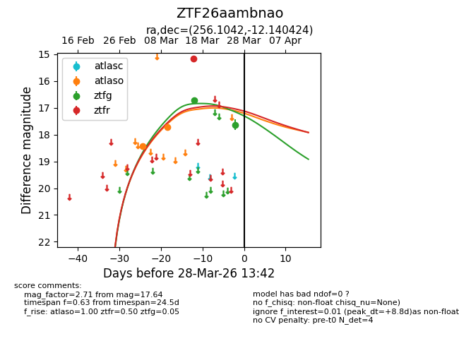
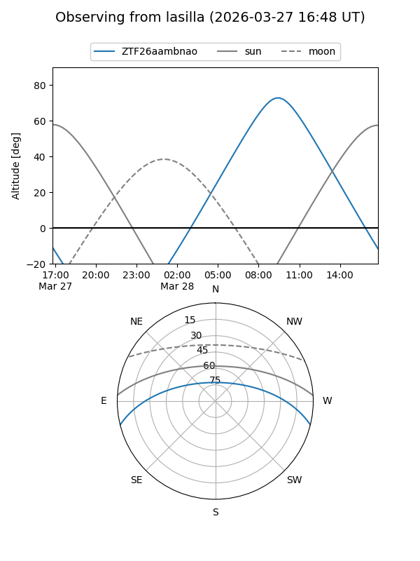
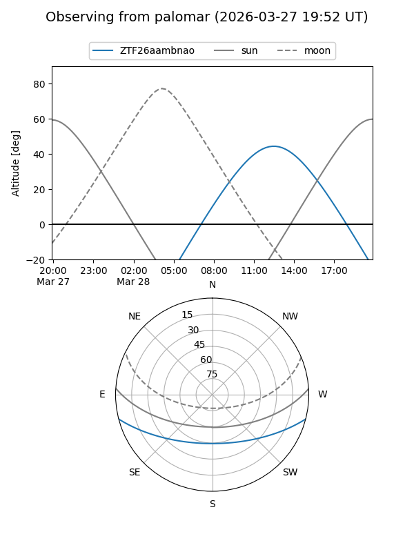
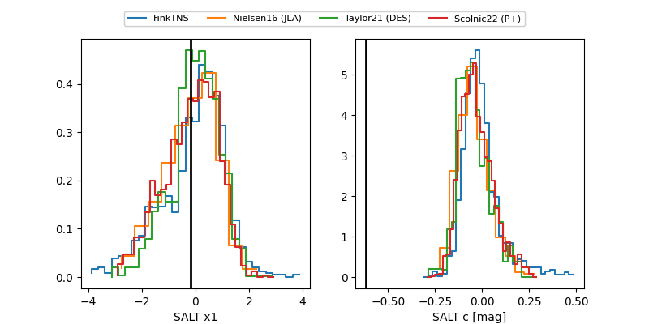

ZTF26aambnao
Target ZTF26aambnao at 2026-03-28 13:45
Aliases and brokers:
FINK: link
Lasair: link
ALeRCE: link
alt names
ZTF26aambnao (ztf,fink_ztf)
Coordinates:
equatorial (ra, dec) = 256.1042,-12.14042
equatorial (HMS+DMS) = 17:04:25.00,-12:08:25.53
galactic (l, b) = (8.9765,+17.20540)
Flags:
Photometry:
last atlaso=17.73, ztfg=17.64, ztfr=15.15
2 atlaso, 2 ztfg, 1 ztfr detections
Lightcurve

Visibility


Additional plots
